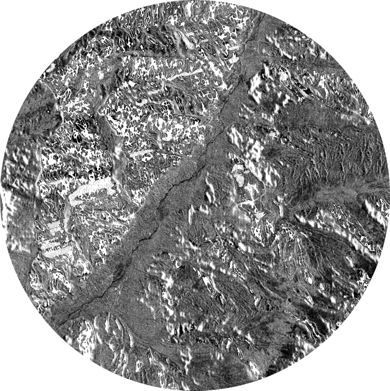
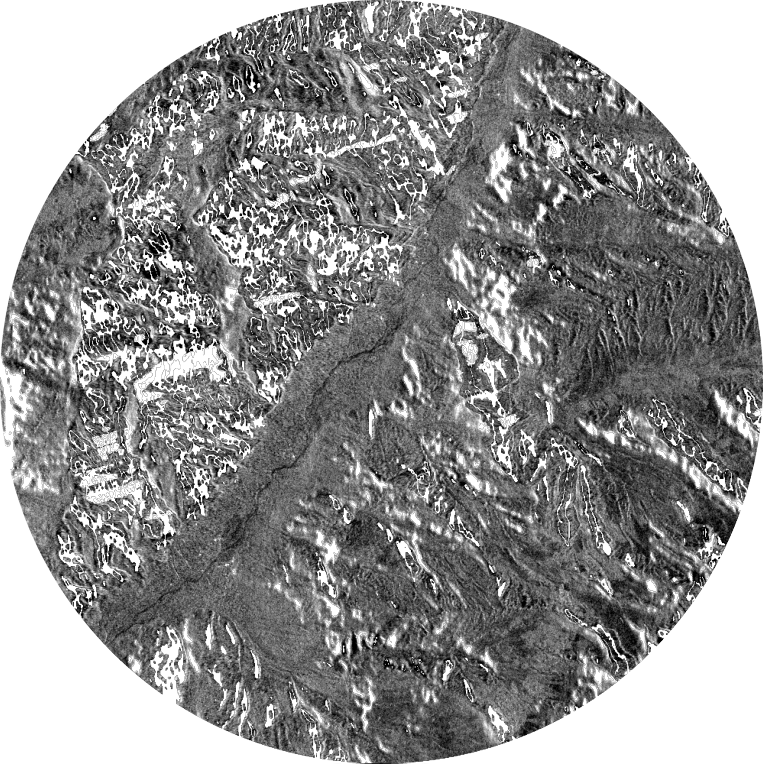
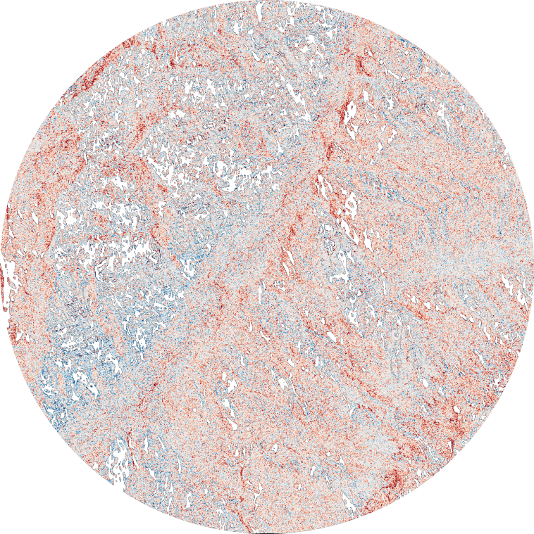

The analysis identified 0.0278 km² of candidate water-like change in Kandia Gol. A much larger area showed increased radar backscatter, indicating other surface changes that cannot be confidently attributed to flooding. These are preliminary satellite-derived observations, not confirmed flood extent.
Loading map data…
Layers
DarkerBrighter
Basemap
Click the map, then scroll to zoom
Overlay position is approximate. Purple areas were already water before the event and are excluded from the candidate area. Select a patch to see its area.


14 July 202626 July 2026
Drag across the image. Both scenes use the same track, frame, polarisation and grey range. Left: 14 July 2026. Right: 26 July 2026.
Hover over any image to zoom all three in sync.
14 July 2026Before26 July 2026After

Backscatter changeBlue darker · red brighter
All scenes use the same track, frame, polarisation and grey range.
Evidence
What the radar pair supports, and what it cannot prove.
What the data shows
55 candidate water-like patches, covering 0.0278 km² in total, identified on a 10 m grid.
The two scenes form a valid same-track pair (Track 84, Frame 19, ascending).
A much larger area, 11.56 km², showed increased radar backscatter. This indicates surface change, but its cause cannot be determined from the radar comparison alone.
The event itself is confirmed only qualitatively, by the PDMA KP situation report.
What it cannot prove
Whether a detected candidate patch represents confirmed floodwater.
How large the flood was at its peak. No satellite imaged the area between 19 and 24 July.
That the brighter areas are debris. Radar cannot tell debris from other surface changes.
The complete extent of flooding, as debris-laden flash floods and narrow channels may be less represented in the mapped results.
The degree of agreement between mapped results and actual ground conditions, as independent optical references and field observations were not used for validation.
Observation history
The flood analysis above uses the 14 July and 26 July pair. These three radar observations are shown for context only.
Earlier reference−20 d
2 July 202620 days before the reported 22 July flood.Acquisition details
Same scale on all three images. Transparent areas are outside the study circle or have no valid data.
Three NISAR radar observations of the same Kandia Gol study area, rendered with one shared brightness scale. Earlier images show features that predate the reported 22 July event. This history provides visual context, not confirmation of floodwater, damage or unchanged conditions.
Limitations
Learn more about the Limitations
01Peak Flood Conditions
The peak flooding event was not directly captured by satellite imagery. The available 26 July scene represents conditions approximately four days after the cloudburst.
02Flash floods scour more than they pool.
Fast mountain floods move boulders and debris, which make the surface rougher and brighter on radar, instead of leaving calm, dark water. PDMA reported 7 to 8 houses washed away.
03Steep valleys hide parts of the scene.
Radar shadow and layover cover about 14% of the 5 km study area and can hide narrow stretches of river.
04Narrow Channel Representation
Flood channels narrower than approximately 20 m may be difficult to distinguish from surrounding banks at 10 m resolution and may be removed during the classification cleaning process.
05Ground Validation
The agreement between mapped results and actual ground conditions remains unverified, as no independent flood outline or field observations were available for validation.